注记Work-in-progress 🚧
You are reading the work-in-progress first edition of Causal Inference in R. This chapter has its foundations written but is still undergoing changes.
Preparing data to answer causal questions · 原书逐章中译
来源：Malcolm Barrett、Lucy D’Agostino McGowan、Travis Gerke，Causal Inference in R · Preparing data to answer causal questions。 本页为中文翻译；原书代码块、公式、图表交叉引用和引用键均按原文保留。统计图在网页渲染时由 R 代码生成，静态插图直接引用原文件。 原书仓库采用 CC BY-NC-SA 4.0；代码采用 MIT 许可。请遵守原许可证并注明作者。
You are reading the work-in-progress first edition of Causal Inference in R. This chapter has its foundations written but is still undergoing changes.
在许多方面，为因果推断准备数据和进行探索性分析，与描述和预测中的做法相同。 因果推断的不同之处在于，我们需要思考如何将这一过程与因果问题和目标试验模拟联系起来。 我们还将借此机会更好地了解数据在多大程度上可能满足因果假设；不过，正如我们在 因果推断不（只是）一个统计问题 中所见，数据永远无法告诉我们判断是否正确。
让我们看看数据以及接下来几章将要考察的因果问题。
本书的大部分内容将使用从 Touring Plans 获得的数据。 Touring Plans 是一家帮助人们规划迪士尼和环球影城主题公园行程的公司。 他们的目标之一，是利用数据和统计建模，准确预测这些主题公园中游乐设施的等待时间。 {touringplans} R 包包含多个有关迪士尼主题公园游乐设施的数据集。
library(touringplans)
attractions_metadata# A tibble: 14 x 8
dataset_name name short_name park land opened_on
<chr> <chr> <chr> <chr> <chr> <date>
1 alien_sauce~ Alie~ Alien Sau~ Disn~ Toy ~ 2018-06-30
2 dinosaur DINO~ DINOSAUR Disn~ Dino~ 1998-04-22
3 expedition_~ Expe~ Expeditio~ Disn~ Asia 2006-04-07
4 flight_of_p~ Avat~ Flight of~ Disn~ Pand~ 2017-05-27
5 kilimanjaro~ Kili~ Kilimanja~ Disn~ Afri~ 1998-04-22
6 navi_river Na'v~ Na'vi Riv~ Disn~ Pand~ 2017-05-27
7 pirates_of_~ Pira~ Pirates o~ Magi~ Adve~ 1973-12-17
8 rock_n_roll~ Rock~ Rock Coas~ Disn~ Suns~ 1999-07-29
9 seven_dwarf~ Seve~ 7 Dwarfs ~ Magi~ Fant~ 2014-05-28
10 slinky_dog Slin~ Slinky Dog Disn~ Toy ~ 2018-06-30
11 soarin Soar~ Soarin' Epcot Worl~ 2005-05-05
12 spaceship_e~ Spac~ Spaceship~ Epcot Worl~ 1982-10-01
13 splash_moun~ Spla~ Splash Mo~ Magi~ Fron~ 1992-07-17
14 toy_story_m~ Toy ~ Toy Story~ Disn~ Toy ~ 2008-05-31
# i 2 more variables: duration <dbl>,
# average_wait_per_hundred <dbl>此外，该包还包含一个记录公园原始元数据的数据集，其中的观测按日记录。 这些元数据包括某一天沃尔特·迪士尼世界的票价季节（是旺季——想想圣诞节——平季——想想刚开学的时候——还是常规季）、当天公园的历史气温，以及当天是否有特殊活动，例如额外魔法时段（在这段时间里，公园会提前向入住沃尔特·迪士尼世界度假区的游客开放）。
parks_metadata_raw# A tibble: 2,079 x 181
date wdw_ticket_season dayofweek dayofyear
<date> <chr> <dbl> <dbl>
1 2015-01-01 <NA> 5 0
2 2015-01-02 <NA> 6 1
3 2015-01-03 <NA> 7 2
4 2015-01-04 <NA> 1 3
5 2015-01-05 <NA> 2 4
6 2015-01-06 <NA> 3 5
7 2015-01-07 <NA> 4 6
8 2015-01-08 <NA> 5 7
9 2015-01-09 <NA> 6 8
10 2015-01-10 <NA> 7 9
# i 2,069 more rows
# i 177 more variables: weekofyear <dbl>,
# monthofyear <dbl>, year <dbl>, season <chr>,
# holidaypx <dbl>, holidaym <dbl>, holidayn <chr>,
# holiday <dbl>, wdwticketseason <chr>,
# wdwracen <chr>, wdweventn <chr>, wdwevent <dbl>,
# wdwrace <dbl>, wdwseason <chr>, ...每年都会选出一些日期，在早晨安排额外魔法时段。
parks_metadata_raw |>
# 0: no extra magic hours, 1 extra magic hours
count(year, mkemhmorn)# A tibble: 13 x 3
year mkemhmorn n
<dbl> <dbl> <int>
1 2015 0 290
2 2015 1 75
3 2016 0 300
4 2016 1 66
5 2017 0 293
6 2017 1 72
7 2018 0 304
8 2018 1 61
9 2019 0 250
10 2019 1 115
11 2020 0 135
12 2020 1 14
13 2021 0 104截至 2019 年，每年的数据都覆盖全年（2016 年是闰年）。 当然，2020 年和 2021 年公园受到 COVID-19 疫情限制，因此可用的日期更少。
parks_metadata_raw |>
# extra magic hours
count(year, mkemhmorn) |>
group_by(year) |>
summarize(days = sum(n))# A tibble: 7 x 2
year days
<dbl> <int>
1 2015 365
2 2016 366
3 2017 365
4 2018 365
5 2019 365
6 2020 149
7 2021 104我们还拥有各个游乐设施等待时间的数据。 例如，下面是名为 Seven Dwarfs Mine Train 的游乐设施数据。
seven_dwarfs_train# A tibble: 321,631 x 4
park_date wait_datetime wait_minutes_actual
<date> <dttm> <dbl>
1 2015-01-01 2015-01-01 07:51:12 NA
2 2015-01-01 2015-01-01 08:02:13 NA
3 2015-01-01 2015-01-01 08:05:30 54
4 2015-01-01 2015-01-01 08:09:12 NA
5 2015-01-01 2015-01-01 08:16:12 NA
6 2015-01-01 2015-01-01 08:22:16 55
7 2015-01-01 2015-01-01 08:23:12 NA
8 2015-01-01 2015-01-01 08:29:12 NA
9 2015-01-01 2015-01-01 08:37:13 NA
10 2015-01-01 2015-01-01 08:44:11 NA
# i 321,621 more rows
# i 1 more variable: wait_minutes_posted <dbl>对于每个 park_date，我们都有若干等待时间报告，包括公布的等待时间（从迪士尼网站显示的时间中抓取，wait_minutes_posted）和实际等待时间（由实际排队的个人报告，wait_minutes_actual）。每一行记录某个 wait_datetime 的公布等待分钟数或实际等待分钟数之一，另一个值在该行中为 NA。
seven_dwarfs_train |>
count(park_date, sort = TRUE)# A tibble: 2,334 x 2
park_date n
<date> <int>
1 2021-11-08 363
2 2021-10-01 359
3 2021-11-09 344
4 2021-10-29 333
5 2021-10-15 332
6 2021-10-10 330
7 2021-10-05 329
8 2021-10-17 327
9 2021-10-20 327
10 2021-10-08 323
# i 2,324 more rows这是我们希望利用这些数据回答的因果问题：
在 2018 年，Magic Kingdom 早晨是否安排额外魔法时段，与当天上午 9 点至 10 点 Seven Dwarfs Mine Train 的平均公布等待时间之间是否存在关系？
让我们先用图示表达这个因果问题（图 61.1）。
knitr::include_graphics(here::here("images/emm-diagram.png"))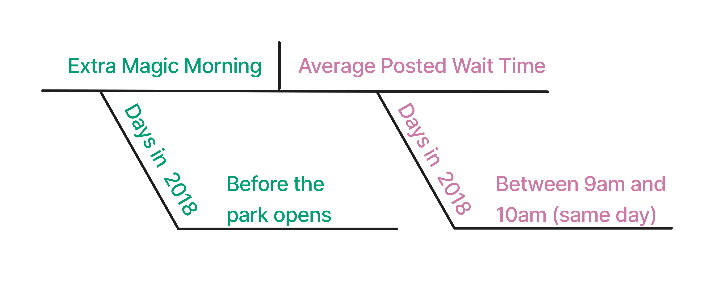
过去，入住沃尔特·迪士尼世界度假区酒店的游客可以在额外魔法时段进入公园；在此期间，公园不向其他游客开放。 这些额外时段可能安排在早晨或晚上。 Seven Dwarfs Mine Train 是沃尔特·迪士尼世界 Magic Kingdom 中的一项游乐设施。 Magic Kingdom 可能会、也可能不会在每天安排额外魔法时段。 我们关注的是，早晨的额外魔法时段（“Extra Magic Morning”）是否会导致当天上午 9 点至 10 点 Seven Dwarfs Mine Train 平均公布等待时间发生变化。
图 61.2 是针对这一问题提出的 DAG。 我们假设，是否安排早晨额外魔法时段取决于公园关闭时间、票价季节和历史最高气温。 同样，这三个变量也都是平均公布等待时间的原因。 当然，这是一个大幅简化的 DAG。 此外，迪士尼的某个人知道 2018 年额外魔法时段的分配机制，因此如果我们在那里工作，就会想尽可能多地了解这一过程。 我们设想，暴露和结局背后的实际因果过程都比这里复杂得多。 不过，为了举例，我们会保持简单。
library(ggdag)
library(ggokabeito)
coord_dag <- list(
x = c(Season = 0, close = 0, weather = -1, x = 1, y = 2),
y = c(Season = -1, close = 1, weather = 0, x = 0, y = 0)
)
labels <- c(
x = "Extra Magic Morning",
y = "Average wait",
Season = "Ticket Season",
weather = "Historic high temperature",
close = "Time park closed"
)
dagify(
y ~ x + close + Season + weather,
x ~ weather + close + Season,
coords = coord_dag,
labels = labels,
exposure = "x",
outcome = "y"
) |>
tidy_dagitty() |>
node_status() |>
ggplot(
aes(x, y, xend = xend, yend = yend, color = status)
) +
geom_dag_edges_arc(curvature = c(rep(0, 5), 0.3)) +
geom_dag_point() +
geom_dag_label_repel(seed = 1630) +
scale_color_okabe_ito(na.value = "grey90") +
theme_dag() +
theme(legend.position = "none") +
coord_cartesian(clip = "off")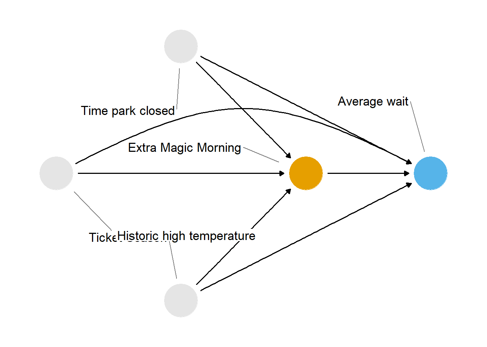
如果我们负责沃尔特·迪士尼世界的运营，可能会想随机安排日期是否有额外魔法时段。 但我们并不负责，因此需要依赖先前收集的观察性数据，并尽力模拟本应建立的目标试验（如果当时能够建立的话）。 这里，我们的观测单位是日期。 表 61.1 将因果问题的每个要素与目标试验方案中的相应要素对应起来。
| Protocol Step | Description | Target Trial | Emulation |
|---|---|---|---|
| 纳入标准 | 研究中应包括哪些日期？ | 日期必须来自 2018 年。 | 与目标试验相同。 |
| 暴露定义 | 在符合纳入条件时，研究中的日期将接受什么精确的暴露？ | 暴露：Magic Kingdom 早晨有额外魔法时段。否则为未暴露。 | 与目标试验相同。 |
| 分配程序 | 如何将符合条件的日期分配到某种暴露？ | 日期以 50% 的概率随机安排是否有早晨额外魔法时段。分配过程不设盲。 | 根据数据为日期分配实际暴露状态，例如当天早晨是否有额外魔法时段。通过调整混杂来模拟随机化。 |
| 随访期间 | 随访何时开始和结束？ | 开始：暴露当天公园开门时；结束：当天上午 10 点。 | 与目标试验相同。 |
| 结局定义 | 将测量什么精确的结局？ | 当天上午 9 点至 10 点之间 Seven Dwarfs Mine Train 的平均公布等待时间。 | 与目标试验相同。 |
| 关注的因果对比 | 将估计哪个因果估计目标？ | 平均处理效应（ATE）。 | 与目标试验相同。 |
| 分析计划 | 将对数据进行哪些处理和统计操作，以估计所关注的因果对比？ | 使用逆概率加权计算 ATE，并根据历史最高气温、票价季节和公园关闭时间进行加权。 | 与目标试验相同。在本例中，这些变量是混杂因子；调整集的确定依据是我们对 图 61.2 中所示因果结构的假设。 |
你可以把方案中的各个步骤看作需要采取的行动。 在随机试验中，其中许多行动属于试验设计和数据收集的一部分。 在目标试验模拟中，我们通常需要自行对数据应用这些行动，从而准备好回答因果问题。 表 61.2 展示了我们可能需要采取的行动类型（这里使用的是 tidyverse 中的函数）。
| Target trial protocol element | tidyverse function |
|---|---|
| 目标试验方案要素 | filter() |
| 暴露定义 | mutate() |
| 分配程序 | mutate()、select() |
| 随访期间 | mutate()、pivot_longer()、pivot_wider() |
| 结局定义 | mutate() |
| 分析计划 | select()、mutate()、*_join() |
要回答因果问题，我们需要处理 seven_dwarfs_train 数据集和 parks_metadata_raw 数据集。 先从 seven_dwarfs_train 数据开始。 {touringplans} 包中的 seven_dwarfs_train 数据集包含以下信息：某条等待时间记录的日期（park_date）、等待时间（wait_datetime）、实际等待时间（wait_minutes_actual）和公布等待时间（wait_minutes_posted）。
让我们看看这个数据集。 日期范围看起来合理，公布的等待时间也一样。不过，实际等待时间的最小值竟然是 -9.2918^{4}！
seven_dwarfs_train |>
reframe(
across(
c(park_date, starts_with("wait_minutes")),
\(.x) range(.x, na.rm = TRUE)
)
)# A tibble: 2 x 3
park_date wait_minutes_actual wait_minutes_posted
<date> <dbl> <dbl>
1 2015-01-01 -92918 0
2 2021-12-28 217 300我们暂时还不会使用这个变量，但最好先删除这一行。
seven_dwarfs_train <- seven_dwarfs_train |>
filter(wait_minutes_actual >= 0 | is.na(wait_minutes_actual))等待时间的分布很宽，实际等待时间的平均值似乎比公布等待时间更短。
seven_dwarfs_train |>
pivot_longer(
starts_with("wait_minutes"),
names_to = "wait_type",
values_to = "wait_minutes"
) |>
ggplot(aes(wait_minutes, fill = wait_type)) +
geom_density(color = NA) +
facet_wrap(~wait_type)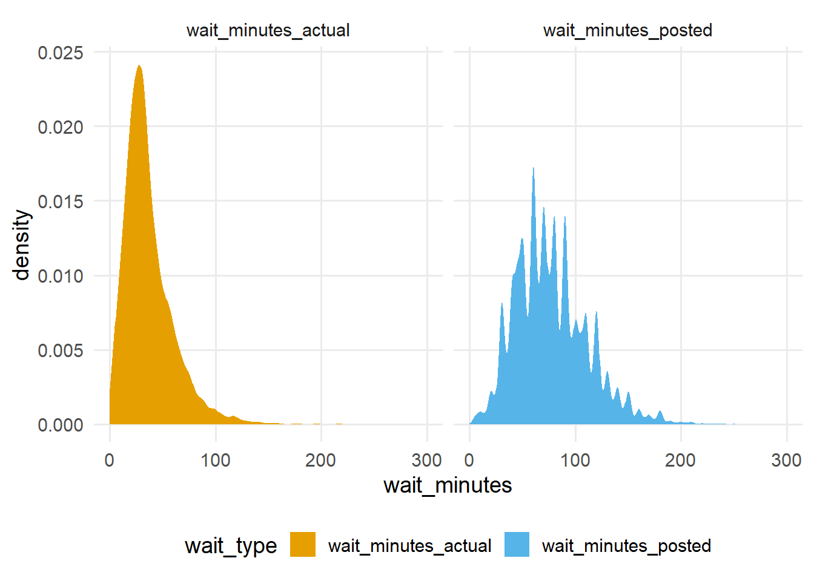
公布的等待时间也更参差不齐。 它们似乎按 5 分钟进行四舍五入。
seven_dwarfs_train |>
pull(wait_minutes_posted) |>
unique() |>
sort() [1] 0 5 10 15 20 25 30 35 40 45 50 55
[13] 60 65 70 75 80 85 90 95 100 105 110 115
[25] 120 125 130 135 140 145 150 155 160 165 170 175
[37] 180 185 190 195 200 205 210 215 220 225 230 235
[49] 240 250 260 270 280 300要理解数据的局限性和潜在问题，进行这类数据检查至关重要。 R 提供了许多用于快速汇总数据集的优秀工具，例如 skimr::skim() 和 pointblank::scan_data()。 我们还建议使用类似 {pointblank} 的数据验证工具，将你对数据的预期记录下来并进行检验。
我们需要利用这个数据集计算结局，即上午 9 点至 10 点之间的平均公布等待时间。 我们的纳入标准规定，分析范围必须限制在 2018 年的日期。
seven_dwarfs_9 <- seven_dwarfs_train |>
# eligibility criteria
filter(year(park_date) == 2018) |>
# get hour from wait
mutate(hour = hour(wait_datetime)) |>
# outcome definition:
# calculate average wait minutes by date and hour
group_by(park_date, hour) |>
summarize(
across(
c(
wait_minutes_posted,
wait_minutes_actual
),
\(.x) mean(.x, na.rm = TRUE),
.names = "{.col}_avg"
),
.groups = "drop"
) |>
# replace NaN with NA
# this occurs when there is a mean of a
# vector of length 0, e.g., no observation for the hour
mutate(across(
c(
wait_minutes_posted_avg,
wait_minutes_actual_avg
),
\(.x) if_else(is.nan(.x), NA, .x)
)) |>
# outcome definition:
# only keep the average wait time between 9 and 10
filter(hour == 9)
seven_dwarfs_9# A tibble: 362 x 4
park_date hour wait_minutes_posted_avg
<date> <int> <dbl>
1 2018-01-01 9 60
2 2018-01-02 9 60
3 2018-01-03 9 60
4 2018-01-04 9 68.9
5 2018-01-05 9 70.6
6 2018-01-06 9 33.3
7 2018-01-07 9 46.4
8 2018-01-08 9 69.5
9 2018-01-09 9 64.3
10 2018-01-10 9 74.3
# i 352 more rows
# i 1 more variable: wait_minutes_actual_avg <dbl>现在结局已经确定，我们需要获取暴露变量，以及与相关日期的公园特定变量，并可能对其中一些进行调整。 查看 图 61.2 可以发现，我们有三条开放的后门路径。 可以用每条路径上的三个混杂因子将它们关闭：票价季节、公园关闭时间和历史最高气温。 这些变量位于 parks_metadata_raw 数据集中。 由于其中的名称采用原始格式，这些数据还需要额外清理。
在尝试回答因果问题时，我们经常需要合并多个来源的数据，以确保结局、暴露和混杂因子能够连接在一起。 让我们先清理这些数据，再把它们连接到结局数据。
parks_metadata_raw 包含的变量远多于 seven_dwarfs_train。
parks_metadata_raw |>
length()[1] 181对于本次分析，我们需要 date（观测日期，可作为连接时使用的 ID）、wdw_ticket_season（该日期的票价季节）、wdwmaxtemp（历史最高气温）、mkclose（Magic Kingdom 的关闭时间）以及 mkemhmorn（Magic Kingdom 早晨是否有额外魔法时段）。
parks_metadata <- parks_metadata_raw |>
## exposure definition, assignment procedure,
## and analysis plan: select the ID, exposure, and confounders
select(
# id
park_date = date,
# exposure
park_extra_magic_morning = mkemhmorn,
# confounders
park_ticket_season = wdw_ticket_season,
park_temperature_high = wdwmaxtemp,
park_close = mkclose
) |>
## eligibility criteria: days in 2018
filter(year(park_date) == 2018)我们希望变量名遵循清晰的约定；一种做法是采用 Emily Riederer 提出的“Column Names as Contracts”格式 (Riederer 2020)。 其基本思想是，预先定义一组具有明确含义的词、短语或词干，用来标记信息，并在变量命名时始终一致地使用它们。 例如，在这些数据中，特定于某次等待时间的变量都以 wait 开头（例如 wait_datetime 和 wait_minutes_actual）；从公园元数据中获得、特定于某一天公园的变量都以 park 开头（例如 park_date 或 park_temperature_high）。
2018 年每个月有额外魔法时段的日期占 12% 至 16%，但 12 月例外：当月 42% 的日期有早晨额外魔法时段。
parks_metadata |>
group_by(month = month(park_date)) |>
summarise(prop = sum(park_extra_magic_morning) / n())# A tibble: 12 x 2
month prop
<dbl> <dbl>
1 1 0.129
2 2 0.143
3 3 0.161
4 4 0.133
5 5 0.129
6 6 0.167
7 7 0.129
8 8 0.161
9 9 0.133
10 10 0.161
11 11 0.133
12 12 0.419我们也来进一步了解混杂因子。
并非每个月都会出现所有票价季节类型。 8 月和 9 月没有旺季票价，6 月、7 月或 12 月没有平季票价。
count_by_month <- function(parks_metadata, .var) {
parks_metadata |>
mutate(
month = month(
park_date,
label = TRUE,
abbr = TRUE
)
) |>
count(month, {{ .var }}) |>
# fill in implicitly missing combos
complete(
month,
{{ .var }},
fill = list(n = 0)
)
}
ticket_season_by_month <- parks_metadata |>
count_by_month(park_ticket_season)
ticket_season_by_month |>
arrange(n, park_ticket_season)# A tibble: 36 x 3
month park_ticket_season n
<ord> <chr> <int>
1 Aug peak 0
2 Sep peak 0
3 Jun value 0
4 Jul value 0
5 Dec value 0
6 Jan peak 3
7 May value 3
8 Feb peak 4
9 Jul peak 4
10 Oct peak 4
# i 26 more rows夏季的常规票价日期多得多，而 3 月、5 月和 12 月的旺季票价日期更多（图 61.3）。
ticket_season_by_month |>
ggplot(aes(month, n, fill = park_ticket_season)) +
geom_col(position = "fill", alpha = 0.8) +
labs(
y = "proportion of days",
x = NULL,
fill = "ticket season"
) +
theme(panel.grid.major.x = element_blank())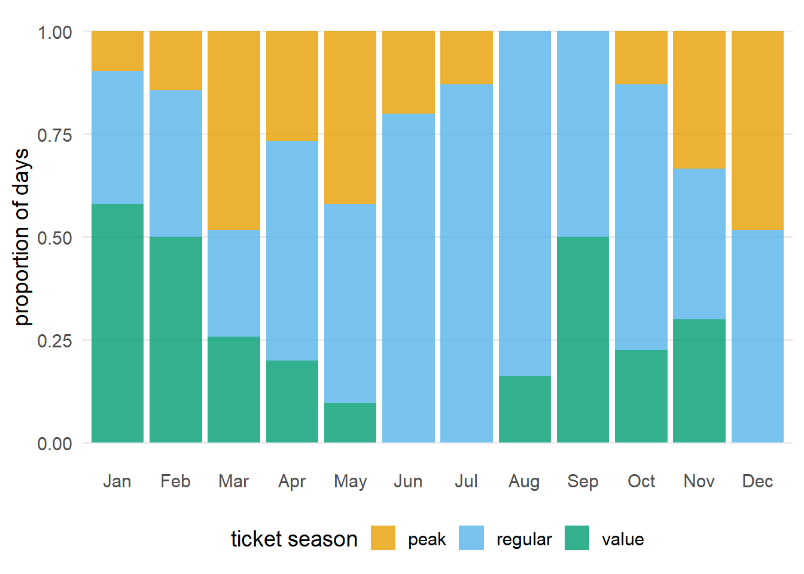
在一年中的大部分时间里，Magic Kingdom 营业至 22:00、21:00 或午夜，不过差异相当大，其中有一天在 16:30 结束营业。
parks_metadata |>
count(park_close, sort = TRUE)# A tibble: 8 x 2
park_close n
<time> <int>
1 22:00 105
2 23:00 93
3 24:00 58
4 18:00 57
5 21:00 28
6 20:00 21
7 25:00 2
8 16:30 1关闭时间在一年中有所变化，深秋和冬季更常见较早的关闭时间（图 61.4）。 夏季不会出现某些较早的时间，深秋也不会出现某些较晚的时间。
parks_metadata |>
count_by_month(park_close) |>
ggplot(aes(month, n, fill = ordered(park_close))) +
geom_col(position = "fill", alpha = 0.85) +
labs(
y = "proportion of days",
x = NULL,
fill = "close time"
) +
theme(panel.grid.major.x = element_blank())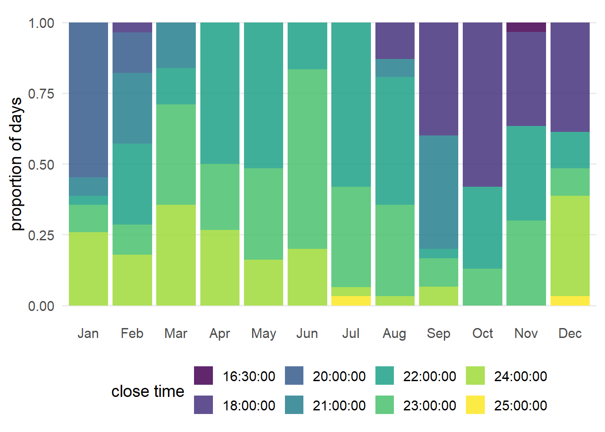
迪士尼世界位于佛罗里达州，因此天气从不会特别寒冷，但夏季很炎热（图 61.5）。
parks_metadata |>
mutate(
month = month(
park_date,
label = TRUE,
abbr = TRUE
)
) |>
ggplot(aes(month, park_temperature_high)) +
geom_jitter(height = 0, width = 0.15, alpha = 0.5) +
labs(
y = "historic high\ntemperature (F)",
x = NULL
)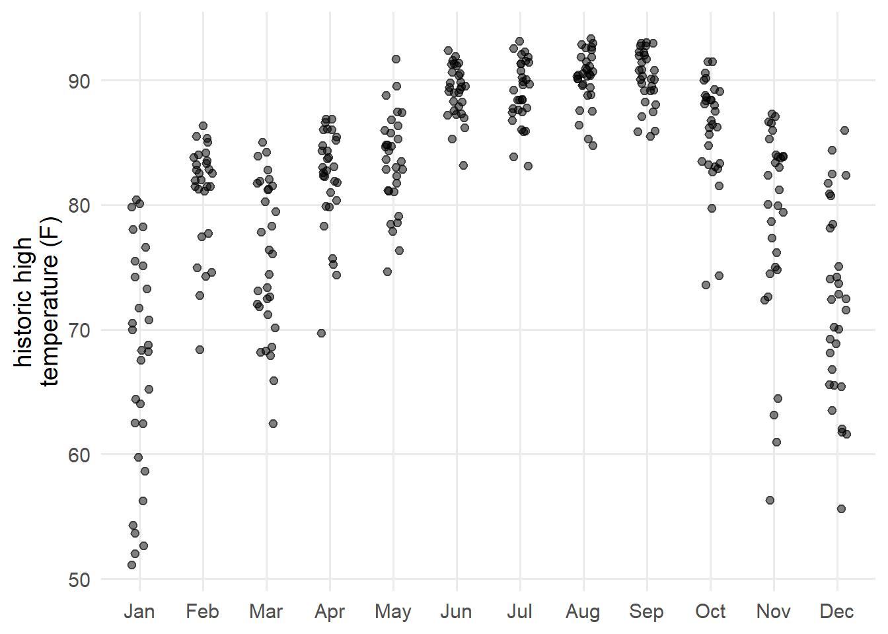
现在，让我们把混杂因子和暴露数据（位于 parks_metadata 中）连接到结局数据（位于 seven_dwarfs_9 中），从而建立一个单一的分析数据集。 在本例中，我们有一个简单的一对一匹配，希望将 parks_metadata 附加到 seven_dwarfs_9；可以为此使用左连接。
连接是数据整理中一个细致而复杂的主题，但通常对于创建分析数据集至关重要。 我们推荐阅读 R for Data Science，其中对连接进行了全面讨论。
值得注意的是，并非每一天都有匹配记录。 2018 年有 365 天，这正是 parks_metadata 中的行数。 然而，seven_dwarfs_9 只有 362 行。 我们可以使用反连接来查看 seven_dwarfs_9 中没有匹配的日期。
parks_metadata |>
anti_join(seven_dwarfs_9, by = "park_date")# A tibble: 3 x 5
park_date park_extra_magic_morn~1 park_ticket_season
<date> <dbl> <chr>
1 2018-05-10 0 regular
2 2018-05-11 1 regular
3 2018-05-12 0 peak
# i abbreviated name: 1: park_extra_magic_morning
# i 2 more variables: park_temperature_high <dbl>,
# park_close <time>这连续三天在上午 9 点的公布等待时间记录缺失。
seven_dwarfs_train |>
filter(
park_date %in% c("2018-05-10", "2018-05-11", "2018-05-12"),
hour(wait_datetime) == 9
)# A tibble: 0 x 4
# i 4 variables: park_date <date>,
# wait_datetime <dttm>, wait_minutes_actual <dbl>,
# wait_minutes_posted <dbl>无论如何，让我们按日期连接这些数据集。 现在，我们有了一个可用于因果分析的单一分析数据集。
seven_dwarfs_9 <- seven_dwarfs_9 |>
left_join(parks_metadata, by = "park_date")
seven_dwarfs_9# A tibble: 362 x 8
park_date hour wait_minutes_posted_avg
<date> <int> <dbl>
1 2018-01-01 9 60
2 2018-01-02 9 60
3 2018-01-03 9 60
4 2018-01-04 9 68.9
5 2018-01-05 9 70.6
6 2018-01-06 9 33.3
7 2018-01-07 9 46.4
8 2018-01-08 9 69.5
9 2018-01-09 9 64.3
10 2018-01-10 9 74.3
# i 352 more rows
# i 5 more variables: wait_minutes_actual_avg <dbl>,
# park_extra_magic_morning <dbl>,
# park_ticket_season <chr>,
# park_temperature_high <dbl>, park_close <time>让我们通过创建描述性表，从较高层次了解这个数据集。 R 提供了许多实现这一目的的工具；我们将使用 {gtsummary} 包的 tbl_summary() 函数。 我们还将使用 {labelled} 包来清理表中的变量名。
在 表 61.3 中，我们看到早晨没有额外魔法时段的日期更多。 略多于半数的日期处于常规票价季节；暴露和未暴露日期都涵盖了三种票价季节。 在关闭时间方面，最常见的时间是 22:00 和 23:00。 此外，还有一些稀疏或空的单元格，例如关闭时间，这些地方可能存在正值性违背。 有早晨额外魔法时段的日期也略凉一些，但差异不大。
library(gtsummary)
library(labelled)
seven_dwarfs_9 |>
set_variable_labels(
park_ticket_season = "Ticket Season",
park_close = "Close Time",
park_temperature_high = "Historic High Temperature"
) |>
mutate(
park_close = as.character(park_close),
park_extra_magic_morning = factor(
park_extra_magic_morning,
labels = c("No Extra Magic Hours", "Extra Magic Hours")
)
) |>
tbl_summary(
by = park_extra_magic_morning,
include = c(
park_ticket_season,
park_close,
park_temperature_high
)
) |>
# add an overall column to the table
add_overall(last = TRUE)| Characteristic | No Extra Magic Hours N = 3021 |
Extra Magic Hours N = 601 |
Overall N = 3621 |
|---|---|---|---|
| Ticket Season | |||
| peak | 63 (21%) | 18 (30%) | 81 (22%) |
| regular | 161 (53%) | 35 (58%) | 196 (54%) |
| value | 78 (26%) | 7 (12%) | 85 (23%) |
| park_close | |||
| 16:30:00 | 1 (0.3%) | 0 (0%) | 1 (0.3%) |
| 18:00:00 | 39 (13%) | 18 (30%) | 57 (16%) |
| 20:00:00 | 19 (6.3%) | 2 (3.3%) | 21 (5.8%) |
| 21:00:00 | 28 (9.3%) | 0 (0%) | 28 (7.7%) |
| 22:00:00 | 93 (31%) | 11 (18%) | 104 (29%) |
| 23:00:00 | 81 (27%) | 11 (18%) | 92 (25%) |
| 24:00:00 | 40 (13%) | 17 (28%) | 57 (16%) |
| 25:00:00 | 1 (0.3%) | 1 (1.7%) | 2 (0.6%) |
| Historic High Temperature | 84 (78, 89) | 83 (76, 87) | 84 (78, 89) |
| 1 n (%); Median (Q1, Q3) | |||
识别变量中是否存在缺失数据至关重要，原因正如我们在 用 DAG 表达因果问题 中看到的，并且我们将在 ?sec-missingness 中进一步探讨。 正如反连接所显示的，我们确实缺少一些数据。 让我们更仔细地看看。 {visdat} 包非常适合快速了解数据中是否存在缺失。
library(visdat)
vis_miss(seven_dwarfs_9)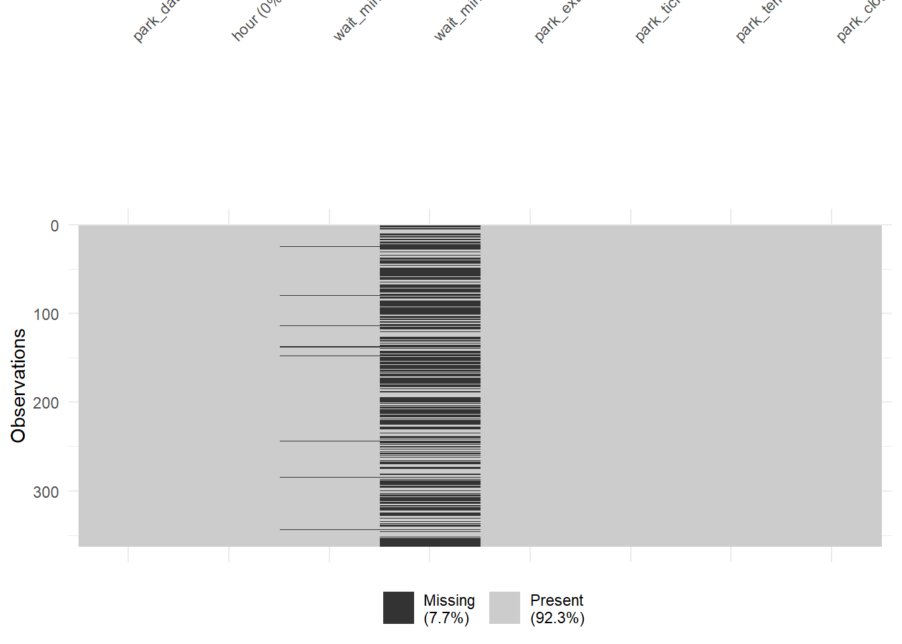
公布等待时间的缺失观测并不只出现在没有任何观测记录的日期。 有些日期虽然有记录，但记录内容为空。 例如，1 月 24 日有九条记录，但两类等待时间都缺失。
seven_dwarfs_train |>
filter(
park_date == "2018-01-24",
hour(wait_datetime) == 9
) |>
select(starts_with("wait_minutes"))# A tibble: 9 x 2
wait_minutes_actual wait_minutes_posted
<dbl> <dbl>
1 NA NA
2 NA NA
3 NA NA
4 NA NA
5 NA NA
6 NA NA
7 NA NA
8 NA NA
9 NA NA总的来说，除了没有记录的 3 天外，我们只缺少 8 天的公布等待时间，约占全年总天数的 3%。 这一缺失量不太可能显著影响我们的结果。 在第一次分析中，我们将忽略公布等待时间中的缺失值。 实际等待时间的缺失要多得多，这是我们将在 ?sec-missingness 中重新讨论的主题。 由于我们目前还不会使用这个结局，所以也先将其放在一边。
正如我们在 因果假设 和 因果推断不（只是）一个统计问题 中看到的，数据无法解决进行因果推断所需、却无法验证的假设问题。 不过，数据仍然可以提供有价值的信息。
可交换性是一个很难检查的假设。 在许多情况下，混杂因子会同时与暴露和结局相关。 然而，混杂因子与这两个变量之间的关系本身可能还受到其他因素混杂。 我们将把可交换性检查留到 ?sec-eval-ps-model，在那里我们会有更好的工具来探查这一假设。
检查一致性的一种方法，是使用包含多个处理版本的数据。 例如，如果我们的问题关注的是“额外魔法时段”，而不是“早晨额外魔法时段”，就可能违反一致性。 额外魔法时段也会安排在晚上，而且合理推测晚上的时段可能产生不同于早晨时段的影响。 我们可以将两种额外魔法时段分成不同的暴露进行探索。 由于我们已经明确了研究对象，所以这里不计算这一点，但其思路与其他任何分层类型相同。 在这里，我们按照已分配的 exposure 值以及 exposure_type 进行分组；后者用于提供有关暴露的更多细节（例如，对于“额外魔法时段”这一暴露，exposure_type 可以是“早晨”或“晚上”）。
dataset |>
group_by(exposure, exposure_type) |>
summarize(...)额外魔法时段之间还可能存在更难测量的差异；如果没有大量侦查工作，我们可能无法检查这些差异。 由于我们已经明确使用的是早晨额外魔法时段，因此不再进一步探查这一假设。 在实践中，你需要谨慎做出这样的决定；要熟悉你的暴露及其可能的表现形式。
让我们深入探讨正值性。 正值性假设要求，在用于实现可交换性的变量的每个水平和组合内，都有暴露和未暴露的研究对象。 我们可以通过按暴露分层，绘制每个候选混杂因子的分布来探索这一点。 这将帮助我们了解，在给定水平下是否缺少暴露或未暴露日期。 不过，区分随机正值性与结构性正值性的唯一方法，是依靠背景知识。 例如，额外魔法时段没有在某个给定关闭时间的日期发生，可能只是巧合（随机违背），但也可能存在这样的日期：根据混杂因子，它们没有资格安排额外魔法时段（结构性违背）。
图 61.6 展示了按日期早晨是否有额外魔法时段分组的 Magic Kingdom 公园关闭时间分布。两种暴露水平都覆盖了协变量空间的大部分范围，但在 Magic Kingdom 于 16:30 或 21:00 关闭的日期中，没有一天安排早晨额外魔法时段。
ggplot(
seven_dwarfs_9,
aes(
x = factor(park_close),
group = factor(park_extra_magic_morning),
fill = factor(park_extra_magic_morning)
)
) +
geom_bar(position = "fill", alpha = 0.8) +
labs(
fill = "Extra Magic Morning",
x = "Time of Park Close"
) +
theme(panel.grid.major.x = element_blank())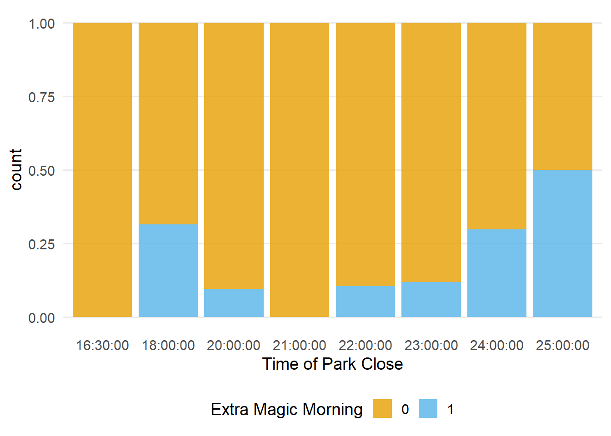
我们知道，只有一天在 16:30 结束营业，但有 28 天在 21:00 结束营业；这些日期中没有一天安排早晨额外魔法时段。若没有额外假设或不改变问题，我们很难对协变量空间中的这一范围作出推断。稍后我们将详细探讨这两种做法。
library(hms)
seven_dwarfs_9 |>
count(park_close, park_extra_magic_morning) |>
complete(
park_close,
park_extra_magic_morning,
fill = list(n = 0)
) |>
filter(park_close %in% parse_hm(c("16:30", "21:00")))# A tibble: 4 x 3
park_close park_extra_magic_morning n
<time> <dbl> <int>
1 16:30 0 1
2 16:30 1 0
3 21:00 0 28
4 21:00 1 0我们可以按日期早晨是否有额外魔法时段，使用镜像直方图考察 Magic Kingdom 历史最高气温的分布。要创建镜像直方图，我们将使用 {halfmoon} 包的 geom_mirror_histogram()。查看 图 61.7 可见，暴露组中最高气温低于 60 度的日期非常少。
library(halfmoon)
ggplot(
seven_dwarfs_9,
aes(
x = park_temperature_high,
group = factor(park_extra_magic_morning),
fill = factor(park_extra_magic_morning)
)
) +
geom_mirror_histogram(bins = 20, alpha = 0.8) +
scale_y_continuous(labels = abs) +
labs(
fill = "Extra Magic Morning",
x = "Historic high temperature (F)"
)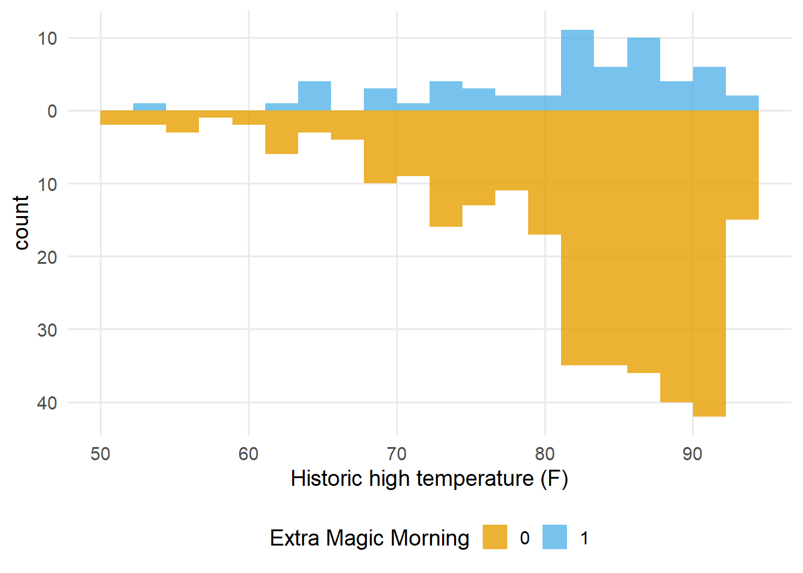
确实，历史最高气温处于这一水平且安排了早晨额外魔法时段的日期只有一天。如果基于我们对问题的理解，这一点让我们特别担忧，可以考虑修改因果问题，将分析限制在气温较高的日期。这样的修改也会限制我们能够据此得出结论的日期范围。
seven_dwarfs_9 |>
filter(park_temperature_high < 60) |>
count(park_extra_magic_morning)# A tibble: 2 x 2
park_extra_magic_morning n
<dbl> <int>
1 0 9
2 1 1最后，让我们按日期早晨是否有额外魔法时段，查看票价季节的分布。查看 图 61.8，我们没有发现任何正值性违背。
ggplot(
seven_dwarfs_9,
aes(
x = park_ticket_season,
group = factor(park_extra_magic_morning),
fill = factor(park_extra_magic_morning)
)
) +
geom_bar(position = "dodge", alpha = 0.8) +
labs(
fill = "Extra Magic Morning",
x = "Magic Kingdom Ticket Season"
) +
theme(panel.grid.major.x = element_blank())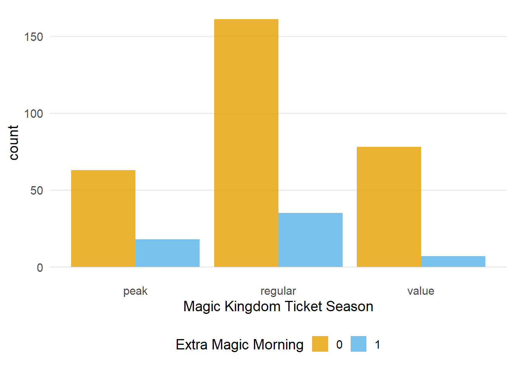
在三个混杂因子中，我们看到了一些可能存在正值性违背的证据。由于这里只有很少的变量，我们可以更仔细地检查。先将 park_temperature_high 变量离散化，按三分位数分成三组。
prop_exposed <- seven_dwarfs_9 |>
## cut park_temperature_high into tertiles
mutate(
park_temperature_high_bin = cut(
park_temperature_high,
breaks = 3
)
) |>
## bin park close time
mutate(
park_close_bin = case_when(
hour(park_close) < 19 & hour(park_close) > 12 ~ "(1) early",
hour(park_close) >= 19 & hour(park_close) < 24 ~ "(2) standard",
hour(park_close) >= 24 | hour(park_close) < 12 ~ "(3) late"
)
) |>
group_by(
park_close_bin,
park_temperature_high_bin,
park_ticket_season
) |>
## calculate the proportion exposed in each bin
summarize(
prop_exposed = mean(park_extra_magic_morning),
.groups = "drop"
) |>
complete(
park_close_bin,
park_temperature_high_bin,
park_ticket_season,
fill = list(prop_exposed = 0)
)
prop_exposed |>
ggplot(
aes(
x = park_close_bin,
y = park_temperature_high_bin,
fill = prop_exposed
)
) +
geom_tile() +
scale_fill_viridis_c(begin = 0.1, end = 0.9) +
facet_wrap(~park_ticket_season) +
labs(
y = "Historic High Temperature (F)",
x = "Magic Kingdom Park Close Time",
fill = "Proportion of\nDays Exposed"
) +
theme(panel.grid = element_blank())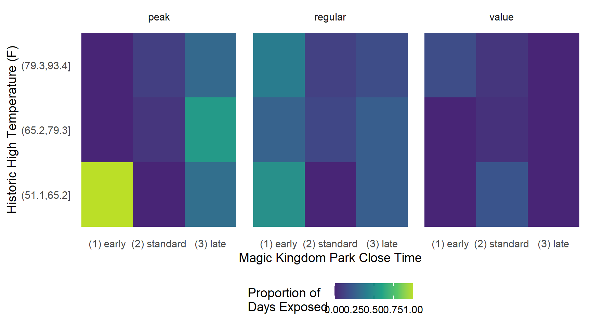
图 61.9 展示了一个有趣的潜在违背。票价处于旺季且气温较低（历史最高气温在 51 至 65 度之间）的日期中，100% 的日期在早晨安排了额外魔法时段。这一点如果结合数据集稍加思考，其实很合理。在佛罗里达州，既气温寒冷、又会被视为游览 Walt Disney World 的“旺季”时间的日期，只有圣诞节和新年期间的日期。在这段时间里，历史上总是会安排额外魔法时段。
我们还有九种组合从未处于暴露状态。
library(gt)
prop_exposed |>
filter(prop_exposed %in% c(1, 0)) |>
gt() |>
cols_label(
park_close_bin = "Close Time",
park_temperature_high_bin = "Temperature",
park_ticket_season = "Ticket Season",
prop_exposed = "Proportion Exposed"
)| Close Time | Temperature | Ticket Season | Proportion Exposed |
|---|---|---|---|
| (1) early | (51.1,65.2] | peak | 1 |
| (1) early | (51.1,65.2] | value | 0 |
| (1) early | (65.2,79.3] | peak | 0 |
| (1) early | (65.2,79.3] | value | 0 |
| (1) early | (79.3,93.4] | peak | 0 |
| (2) standard | (51.1,65.2] | peak | 0 |
| (2) standard | (51.1,65.2] | regular | 0 |
| (3) late | (51.1,65.2] | value | 0 |
| (3) late | (65.2,79.3] | value | 0 |
| (3) late | (79.3,93.4] | value | 0 |
这些日期无法安排早晨额外魔法时段，是偶然发生的，还是结构性的不符合条件？如果只是偶然发生，我们能否作出统计假设，从而对数据中协变量空间的这些空白区域进行有效外推？无论是哪一种情况，我们是否都应该改变当前问题，例如调整纳入条件或估计目标？目前，我们将继续分析，不改变研究问题或目标试验模拟，但会记住这些观察结果，并在后续章节探讨其他选择。
现在，我们已经更好地理解了因果问题和数据（以及它们的局限性），接下来将把注意力转向使用统计模型，以改进对所求答案的估计。